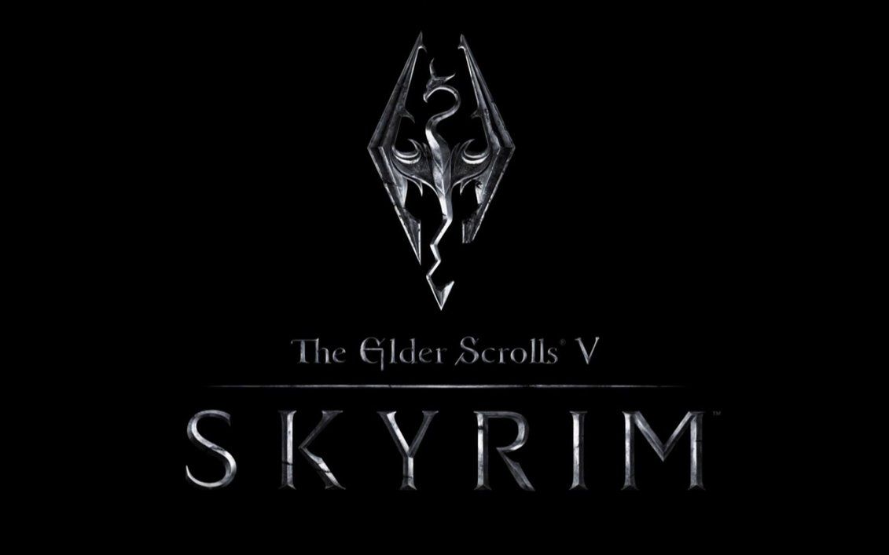

The Elder Scrolls V: Skyrim é um jogo de RPG de ação e mundo aberto desenvolvido pela Bethesda Game Studios. O jogo se passa na província de Skyrim, uma região marcada por guerras, criaturas perigosas e o retorno dos lendários dragões. O jogador controla o Dragonborn, um guerreiro com a habilidade especial de utilizar os poderes dos dragões através dos gritos conhecidos como Thu'um. O gameplay oferece enorme liberdade, permitindo explorar o mundo, cumprir missões, entrar em guildas, aprender magias e desenvolver diferentes estilos de combate. O jogador pode utilizar espadas, arcos, magia, furtividade e diversas combinações de habilidades durante a aventura. Skyrim possui um enorme mundo aberto cheio de cidades, cavernas, montanhas e segredos espalhados pelo mapa. O sistema de progressão permite evoluir habilidades de acordo com as ações realizadas pelo jogador, tornando cada personagem único. Os gráficos e a ambientação medieval ajudaram a tornar o jogo extremamente popular. Além disso, Skyrim ficou conhecido pela grande quantidade de mods criados pela comunidade, adicionando novos conteúdos e melhorias ao jogo. No geral, Skyrim é considerado um dos RPGs mais influentes e populares da história dos videogames.
16+ - recomendado para maiores de 16 anos
A história de The Elder Scrolls V: Skyrim começa quando o protagonista é capturado durante uma guerra civil na província de Skyrim. No momento de sua execução, um dragão aparece inesperadamente e destrói a cidade, permitindo sua fuga. Após sobreviver ao ataque, o personagem descobre possuir o poder raro de absorver almas de dragões e utilizar antigos gritos mágicos conhecidos como Thu'um. Conforme a aventura avança, o protagonista aprende que os dragões retornaram ao mundo sob o comando de Alduin, uma criatura lendária associada ao fim dos tempos. Para impedir essa ameaça, o Dragonborn precisa explorar Skyrim em busca de conhecimento, aliados e novos poderes. Durante a jornada, o jogador encontra diferentes facções e conflitos espalhados pela região, incluindo a guerra civil entre Imperiais e Stormcloaks. Além disso, é possível participar de guildas de ladrões, assassinos, magos e guerreiros, cada uma com suas próprias histórias e missões. O mundo de Skyrim é cheio de livros, ruínas antigas, criaturas fantásticas e segredos escondidos que expandem a narrativa do universo Elder Scrolls. O jogo mistura fantasia medieval, exploração e liberdade de escolhas, permitindo que cada jogador viva sua própria aventura. A narrativa principal e as histórias secundárias ajudam a criar uma experiência enorme e muito imersiva.
11 de novembro de 2011
Entre R$40 e R$250 (dependendo da edição e plataforma)
Aproximadamente 15 GB na versão original e até 25 GB nas versões especiais